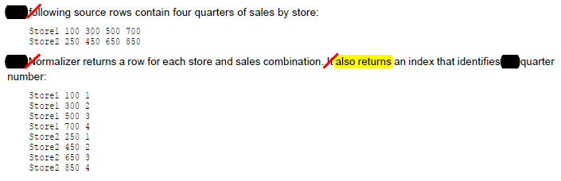

Aggregator Transformation
Sorter Transformation
Normalizer Transformation
Sequence Generator Transformation
Rank Transformation
Aggregator Transformation
* performs aggregate calculations (such as averages and sums)
* int service performs aggregate calculations as it reads and stores
data group and row data in an aggregate cache.
* aggregator t/n perform calculations on groups where EXP t/n
permits you to perform calculations on a row-by-row basis.
* when u use t/n language to create aggregate exp, can use
conditional clauses to filter rows, providing more flexibility than
sql language.
* after u create a session that includes an AGG t/n, u can enable
session option -Incremental Aggregation.
* when int service performs incremental aggregation, it passes
source data through mapping and uses historical cache data to
perform aggregation calculations incrementally.
componets of AGG t/n
* aggregate cache
* aggregate expression
* group by port
* sorted input
Sorter Transformation
Scenarios:[]
[http://www.folkstalk.com/2013/12/get-previous-row-value-in-informatica.html]
Get Previous Row Value in Informatica
Normalizer
Transformation
* receives a row that contain multiple-occuring columns and returns
a row for each instance of multiple-occuring data.
* processes multiple-occuring columns or multiple-occuring groups of
columns in each source row.
* parses multiple-occuring columns from COBOL sources, relational
tables or other sources.
for eg. u have a relational table that stores 4 quarters of sales by
store. u need to create a row for each sales occurrence.
can configure a NORMALIZER t/f to return a
seprate row for each quarter.

* it also returns an index that identifies quarter
Normalizer Transformation Components
1. Transformation
2. Ports
3. Properties
4. Normalizer
5. Metadata Extensions
References:
[http://a2zinformatica.blogspot.in/2014/12/normalizer-transformation-is.html]
Informatica Powercenter Express - Normalizer Transformation
Sequence Generator
Transformation
References:
[http://a2zinformatica.blogspot.in/2014/11/sequence-generator-transformation.html]
Informatica Powercenter Express - Sequence Generator Transformation
Rank Transformation
References:
[http://a2zinformatica.blogspot.in/2014/11/rank-transformation.html]
Informatica Powercenter Express - Rank Transformation